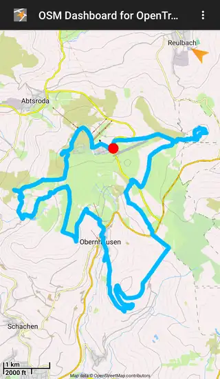

OSM Dashboard (Offline)
صحة ورياضة
Offline version of the OpenStreetMap dashboard for OpenTracks . Can be used as standalone GPX and location viewer as well. It shows a selected track with start- and endpoints on a map from OpenStreetMap based on the Mapsforge VTM library. This version only supports offline maps, which have to be dow
✓ ترخيص مفتوح (Apache-2.0) · آخر تحديث: 2026-06-16
6.10.0الإصدار
7.6 MBالحجم
Apache-2.0الرخصة
Open in Kanzتحميل APK (7.6 MB)
Download APK
SHA-256: 1334a8cfebc927543dc9f962f80b58a83af5be1868fac140fbc1604b5e3148ac


تطبيقات تانية لنفس المطوّر (3)
More apps from this developer: de.storchp
امسح الكود لفتح صفحة التطبيق
Scan to open this app page
لو كنز مش متثبت عندك: نزّل متجر كنز.
Not installed? Get the Kanz store.